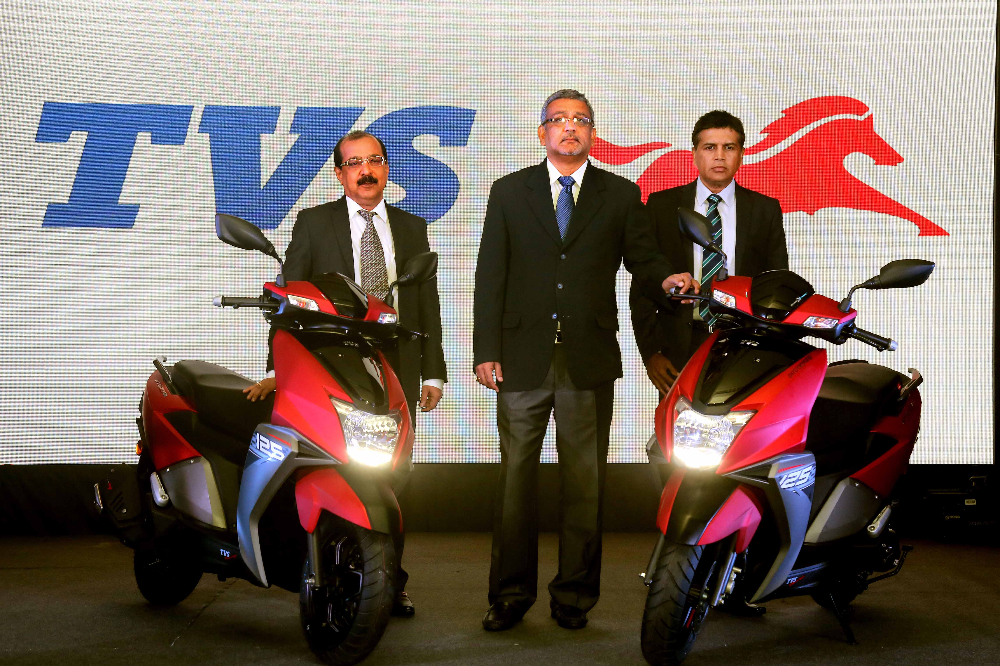

Jagdamba Motors Pvt. Ltd. is the sole authorized distributor of TVS Motor Company in Nepal from September 2015. The company is operated by Shanker Group. Shanker group was founded in the year 1979 by Mr. Shanker Lal Agrawal with integration of diversified operating companies, which had grown over the years since the initial foray in to business by Mr. Rawat Mal Agarwal in Rangoon, Burma in 1930 and the beginning in Nepal in the year 1960 with the setup of company manufacturing buttons.
TVS Brand is a well-established in brand In Two-Wheeler industry in Nepal. The brand has gained popularity in terms of good power and pick up Scooter with sporty looks appealing to youths and middle aged alike. The company occupies 5th largest market share in Nepal.
Jagdamba Motors Pvt. Ltd. has a wide dealer network with 115 dealers across Nepal with 4 exclusive showrooms in Kathmandu. We have 35 service point all over Nepal with team of more than 200 people in management sector and more than 150 people in Mechanics and Junior Staff.
